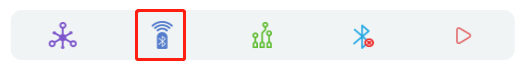
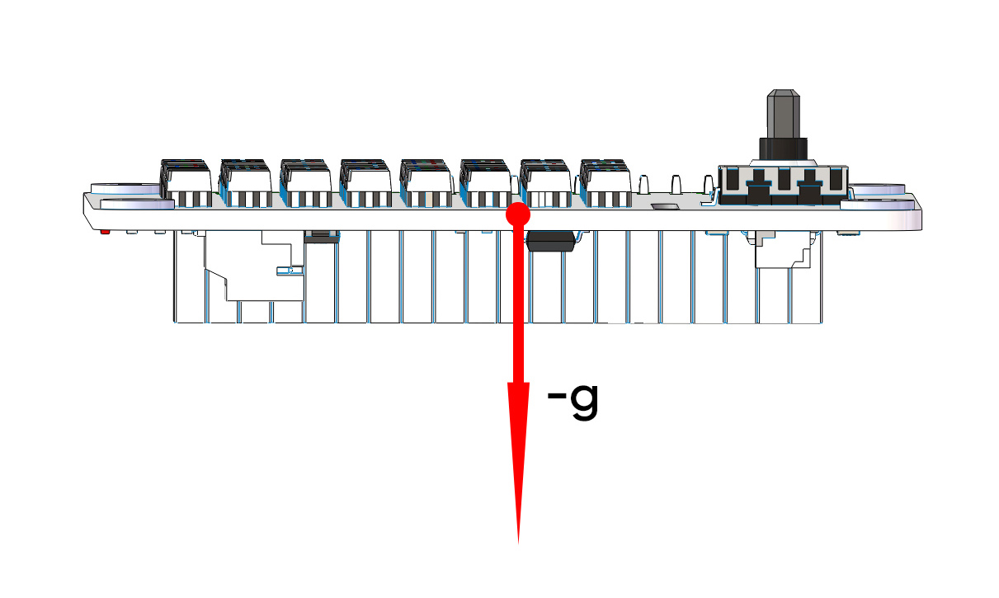
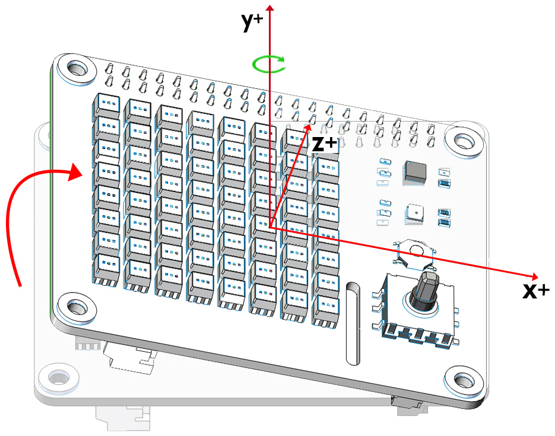
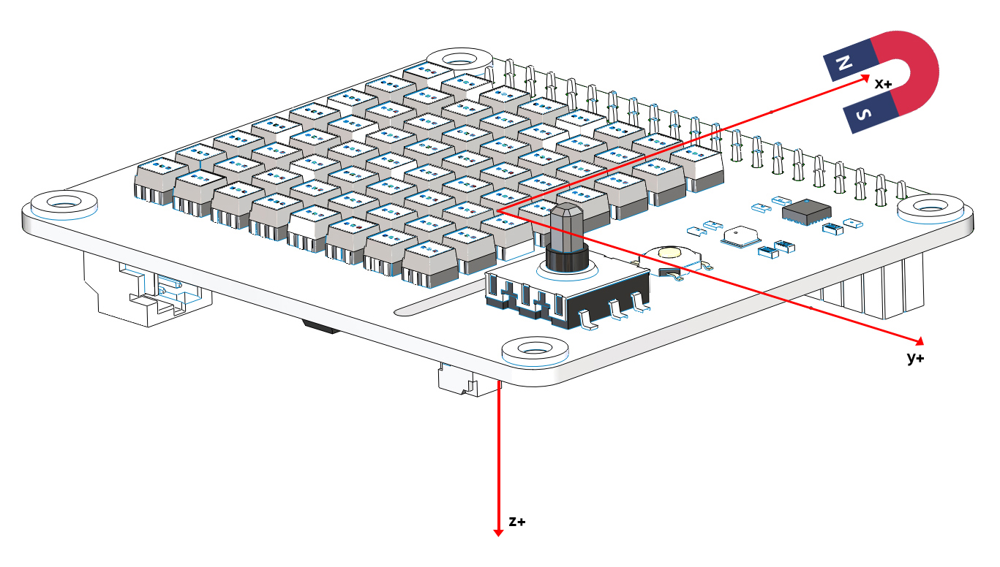
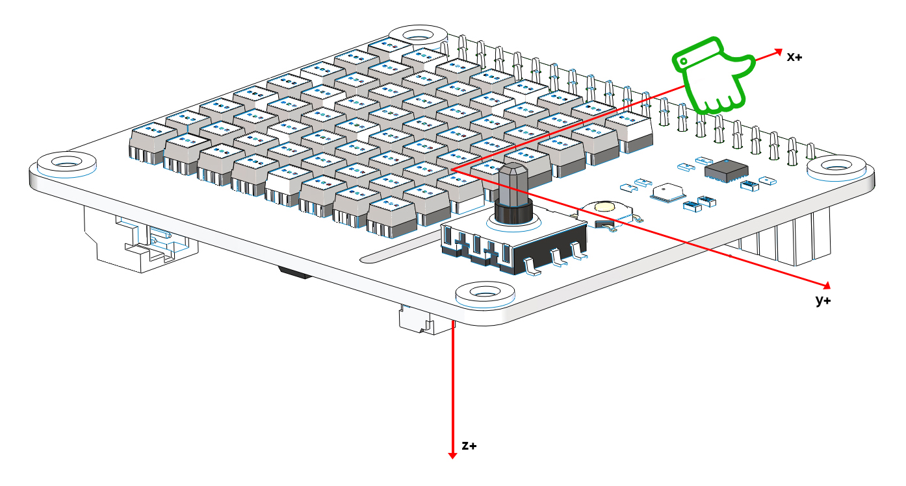
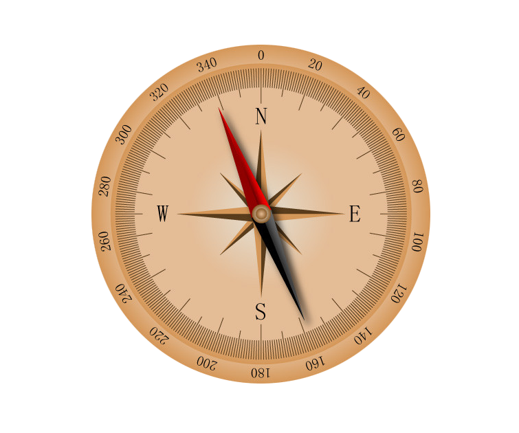
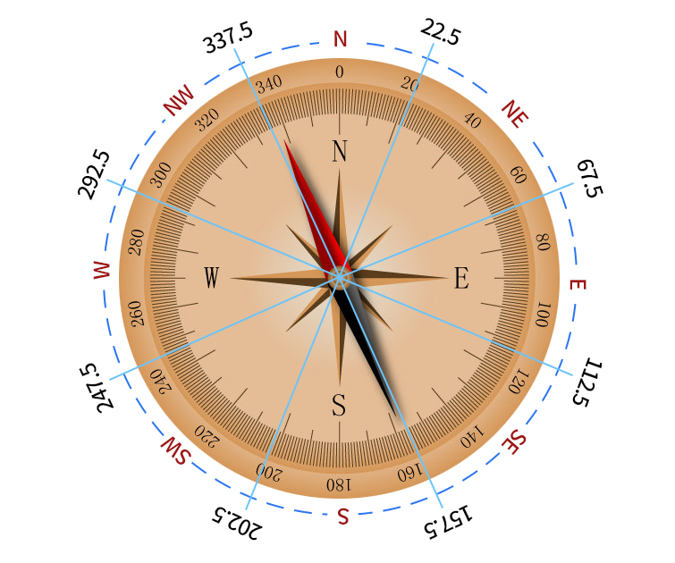

For Python User¶
Here we just show you the effect of this example implementation. You can go directly to the Examples page of Ezblock Studio to see the full codes and run them.
The examples are from simple to complex and it is recommended to run them in order.
Display Graphics¶
Here we will draw a funny character and show a heart on the screen.
Testthe Vibration Motor¶
We can use the slider in the Bluetooth Control page to control the frequency of the vibration motor on the X Sense HAT.
Click the remote controller icon to enter the Bluetooth Control page.
{kind=link}
Click the start button at the top right, and then try to slide the bar.

Display Temperature¶
At this time the X Sense HAT is a thermometer to display the current temperature. You can also check the current temperature remotely on your device.
Sound Effect¶
X Sense Hat can make voice. You can type text to make it speak, or make specific sound effects. Let us fire a gun as soon as a 3s countdown stops.
Music Player¶
In this example, the X Sense HAT acts as a Music Player, the up and down buttons of the joystick to control the volume of the Music Player and the left and right buttons to control the pause or play of the music.
Point Line Rectangle Circle¶
By creating a coordinate we can draw a point, a line, a rectangle and a circle at the specified location on the X Sense HAT.
Calibrate the MPU9250¶
The InvenSense MPU9250 is a System in Package (SiP) that combines two chips: the MPU-6500 three-axis Accelerometer and three-axis Gyroscope; and the AK8963 three-axis Magnetometer.
Before using the MPU9250 chip, we need to calibrate different chips.
Calibrate Accelerometer and Gyroscope
After running the code, place the X Sense HAT horizontally, turn the A switch on and turn it off after 2 seconds, then the calibration is complete.
The X Sense HAT records the current horizontal position as a 0 degree point on the different axes of the Accelerometer and Gyroscope.
Calibrate Magnetometer
The figure below is the coordinate system that will be used to calibrate the magnetometer.

Turn the B switch on（keep switch A off）, rotate the X Sense HAT clockwise around the y-axis by 720° and then rotate it back (also 720°), please control the speed so that the process takes about 15s.

Similarly, rotate the X Sense HAT clockwise around the x-axis by 720° and then rotate it back (also 720°), please control the speed so that the process takes about 15s.

Finally, rotate the X Sense HAT clockwise around the z-axis by 720° and then rotate it back (also 720°), please control the speed so that the process takes about 15s.
Turn off switch B to complete the calibration.

Read from MPU9250¶
After calibrating the MPU9250 chip, let’s print the data read by the MPU9250 chip.
The following diagram shows the coordinate system for the Acelerometer and Gyroscope.

Note
Note the positive direction on each axis.
Accelerometer
Through the Accelerometer, we can read the acceleration values of the X Sense HAT on the different axes in g.
Place the X Sense HAT horizontally. At this time, the X Sense HAT will be subjected to a vertical downward acceleration of gravity, which is g (g=9.80665 N/kg).
{kind=link}
When we print the acceleration value on the z-axis, the Debug Monitor will display a value around -1. Since the acceleration value is on the negative semi-axis of the z-axis, the unit is negative.
def forever():
print("%s"%(imu.read("accel","z")))
delay(100)
Rotate the X Sense HAT clockwise around the y-axis. At this time, the gravitational acceleration received by the X Sense HAT can be decomposed into an acceleration on the x-axis and an acceleration on the z-axis, we can print these 2 accelerations on the Debug Monitor.
def forever():
print("%s"%('-----------------'))
print("%s"%(imu.read("accel","x")))
print("%s"%(imu.read("accel","z")))
delay(100)
Gyroscope
Through the Gyroscope, we can read the angular velocity values of X Sense HAT on different coordinate axes, the unit size is degrees/second.
The judgment of the unit symbol follows the right-hand spiral rule. Hold the axis with your right hand and the thumb points in the direction of the positive semi-axis.
At this time, the direction pointed by the four fingers is the positive direction of the angular velocity value.

Print the angular velocity value on the y-axis.
def forever():
print("%s"%(imu.read("gyro","y")))
delay(100)
Rotate the X Sense HAT clockwise around the y-axis. Because the angle of the X Sense HAT changes, the angular velocity value of the y-axis is generated and will be printed on Debug Monitor. According to the right-hand screw rule, its unit is positive.
{kind=link}
Magnetometer
The following diagram shows the coordinate system for the Magnetometer.

Note
Note the positive direction on each axis.
Through the magnetometer, we can read the magnetic field strength of X Sense HAT on different coordinate axes, the unit size is 15μT.
We can put a magnet on the positive x-axis of the X Sense HAT.
{kind=link}
Then print the value of the magnetic field strength on the positive semi-axis of the x-axis (in positive unit).
def forever():
print("%s"%(imu.read("mag","x")))
delay(100)
Attitude Angle¶
The X Sense HAT calculates the attitude angle of the current position so that we can know whether the X Sense HAT horizontal or not.
This is the coordinate system of the attitude angle.
The unit symbol of the attitude angle also follows the right-hand spiral rule.
Hold the x-axis with your right hand and the thumb points in the direction of the positive semi-axis. At this time, the direction pointed by the four fingers is the positive direction of the roll angle.
In the same way, hold the y-axis with your right hand and the thumb points in the direction of the positive semi-axis. At this time, the direction pointed by the four fingers is the positive direction of the pitch angle.
{kind=link}
After the code runs, and then place the X Sense HAT horizontally, 0 will be printed on the Debug Monitor.
If you rotate the X Sense HAT 30 degrees clockwise around the x-axis, 30 will be printed on the Debug Monitor.

Now change the aram variable to pitch, and then re-run the code.
def forever():
print("%s"%(imu.get_posture_angle(aram = "pitch")))
delay(100)
Rotate the X Sense HAT 30 degrees counterclockwise around the y-axis, -30 will be printed on the Debug Monitor.

Make Gif¶
Draw multiple independent actions on the dot matrix screen. After the code runs, you can see a GIF animation.
Spirit Level¶
Make X Sense HAT a spirit level. By reading the changes in roll angle and pitch angle, we can know whether the X Sense HAT is level.
Gravity Ball Game¶
Next, we have a gravity ball game on X Sense HAT. After pressing the joystick, the game starts. You need to keep the ball in the middle, if the ball hits the edge, the game is over.
Compass¶
We make X Sense HAT into a compass. Draw a circle on the RGB dot matrix, and then use the green dot to indicate the current direction, and the red dot to indicate the true north direction.
The green arrow indicates the detect direction of X Sense HAT, you can use it to judge the current position.

Azimuth Bearing refers to the number on the outer circle and the Azimuth is the angle from the north direction line to the target direction line in a clockwise direction. For example, 0 degrees is the direction of true north, and 30 degrees is the direction of 30° east by north.
{kind=link}
Quadrant Bearing divides the direction of the compass into eight equal parts. For example, the NE direction is between 22.5 degrees and 67.5 degrees. And between 67.5 degrees and 112.5 degrees is the E direction.
{kind=link}
Smart Sense HAT¶
We integrate the functions of X Sense HAT into a menu interface, press and hold the arrow keys of the joystick to select different functions, and press the joystick to execute the current function.